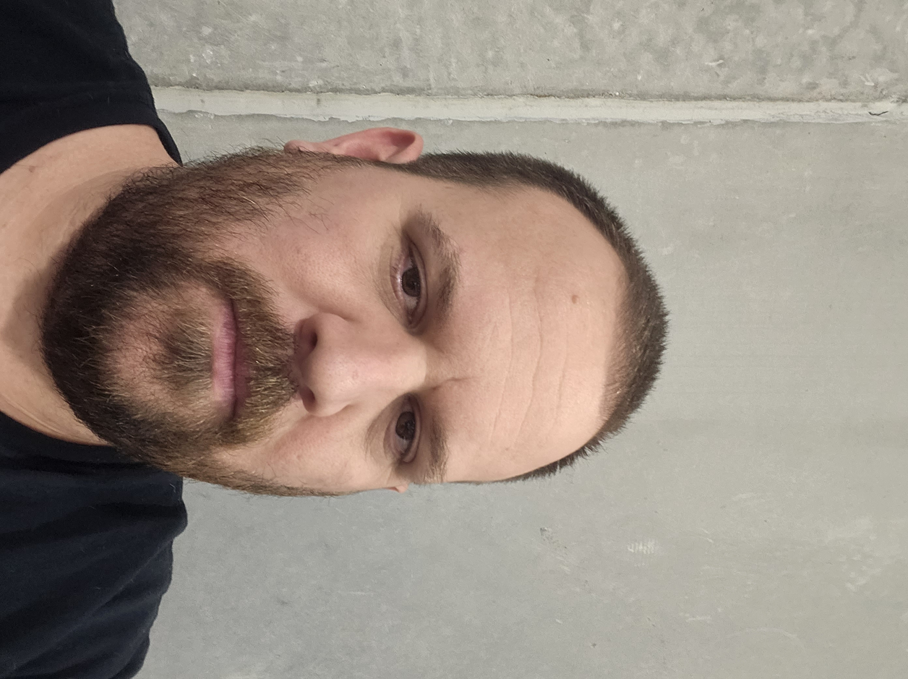

Scotty Williams
Email Address: Unclescotty1@gmail.com
Contact Number: (618) 616-3674
Objective: To solve problems in a creative and effective manner in a challenging position with World Wide Technology
while also enhancing my educational and professional growth in the telecommunication field.
Experience
JANUARY 2017 – CURRENT
QUALITY INSPECTOR/FILEMAKER DEVELOPER, TELCO ASSET MANAGEMENT SERVICES (TAMS)
- Responsible for building and developing custom apps in Claris Filemaker Pro used by the entire company
- Perform quality inspections on telecommunication equipment for customer AT&T
- Responsible for pre and post-inspections on WICs along with communicating to manufacturers and technicians about deficiencies and fails and getting replacement parts in a timely manner
- Coordinate with leads and supervisors about WIC inspection priorities and due dates
- Was responsible for creating a process for the inspection of WIC final inspections along with other aspects of WIC
AUGUST 2006 – JANUARY 2017
AUTO BODY TECHNICIAN, RICK’S AUTO BODY
- Prepped vehicles for paint and other auto body work
- Repaired vehicles that were damaged in accidents
- Various other tasks associated with auto body work
Education
May 2007
HIGH SCHOOL DIPOLOMA, EAST ALTON-WOOD RIVER COMMUNITY HIGH SCHOOL
Skills
- Strong communication skills
- Adaptable to ever changing situations
- Demonstrates ability to identify and troubleshoot critical situations
- Knowledgeable of WIC process
- Knowledge of Oracle program
- Ability to work alone or on a team
- Understand urgency associated with deadlines
- Adept with Microsoft programs
References available upon request